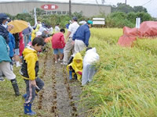
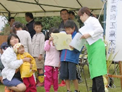

| ９月29日、ＪＡ全農さいたま「彩の米センター」（久喜市）にて、あいにくの雨にもかかわらずこの日を楽しみにしていた生協組合員「26家族104人」の参加で開催されました。
開会式では、主催者を代表してＪＡ全農さいたま笠原本部長から「交流会は農業生産者・消費者のみなさんの掛け橋を目的に開催され９回目を迎えました。体験を通じて農業生産に対するご理解と、今日が思い出となる1日となりますようお楽しみ下さい」とあいさつがありました。続いて、埼玉県農林部米づくり改革支援室からのあいさつと来賓の紹介が行われました。
天気が悪いことから、稲刈り体験と精米センター見学の２グループに分かれ行動しました。
■第Ⅰ部
＜稲刈り体験＞
会場から歩いて10分ほどの「体験圃場」で、危険のないよう鎌の使い方の説明をうけた後、４班に分かれて稲刈りを開始しました。色とりどりの合羽を着て親子一緒に始めた刈り取りも、次第に手つきも慣れ調子が出たところで雨のため早々の切り上げとなってしまい、子どもたちは少し残念そうでした。
＜精米センターの見学＞
お米についてのビデオと精米センターの見学を行いました。
■第Ⅱ部
県産米のコシヒカリのおにぎりとキュウリの漬物、そして県産野菜がたくさん入った「すいとん」の試食を行いました。その後、５月の田植え時に持ち帰ったバケツ稲の簡単にできる脱穀方法と籾殻とりの説明が行われ、続いて、子どもたちからバケツ稲の成長の紙芝居と体験稲刈りの感想の発表がありました。
閉会式では、ＪＡ全農さいたまの岡部副本部長から「農家の方は心をこめて種まきから収穫までしています。今日の体験で農家の大変さもわかっていただけたかなと思います。買物の際は埼玉のお米を利用し地産地消にご協力ください」とあいさつがあり終了しました。
|